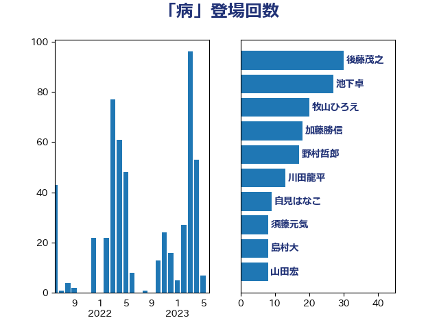

単語「病」

| 後藤茂之 | 自由民主党 | 30 回 |
| 池下卓 | 日本維新の会 | 27 回 |
| 牧山ひろえ | 立憲民主党 | 20 回 |
| 加藤勝信 | 自由民主党 | 18 回 |
| 野村哲郎 | 自由民主党 | 17 回 |
| 川田龍平 | 立憲民主党 | 13 回 |
| 自見はなこ | 自由民主党 | 9 回 |
| 須藤元気 | 無所属 | 8 回 |
| 島村大 | 自由民主党 | 8 回 |
| 山田宏 | 自由民主党 | 8 回 |
| 徳永エリ | 立憲民主党 | 7 回 |
| 小沼巧 | 立憲民主党 | 7 回 |
| 吉田統彦 | 立憲民主党 | 7 回 |
| 松野明美 | 日本維新の会 | 6 回 |
| 堀場幸子 | 日本維新の会 | 6 回 |
| 中島克仁 | 立憲民主党 | 6 回 |
| 高木真理 | 立憲民主党 | 5 回 |
| 阿部弘樹 | 日本維新の会 | 5 回 |
| 山田勝彦 | 立憲民主党 | 5 回 |
| 長妻昭 | 立憲民主党 | 4 回 |
| 鈴木俊一 | 自由民主党 | 4 回 |
| 簗和生 | 自由民主党 | 4 回 |
| 比嘉奈津美 | 自由民主党 | 4 回 |
| 武部新 | 自由民主党 | 4 回 |
| 古賀篤 | 自由民主党 | 4 回 |
| 仁木博文 | 無所属 | 4 回 |
| 金子恵美 | 立憲民主党 | 3 回 |
| 野間健 | 立憲民主党 | 3 回 |
| 野田佳彦 | 立憲民主党 | 3 回 |
| 萩生田光一 | 自由民主党 | 3 回 |
| 芳賀道也 | 国民民主党 | 3 回 |
| 紙智子 | 日本共産党 | 3 回 |
| 竹谷とし子 | 公明党 | 3 回 |
| 神谷裕 | 立憲民主党 | 3 回 |
| 石井苗子 | 日本維新の会 | 3 回 |
| 田村貴昭 | 日本共産党 | 3 回 |
| 田名部匡代 | 立憲民主党 | 3 回 |
| 杉尾秀哉 | 立憲民主党 | 3 回 |
| 岸田文雄 | 自由民主党 | 3 回 |
| 岬麻紀 | 日本維新の会 | 3 回 |
| 小西洋之 | 立憲民主党 | 3 回 |
| 宮本徹 | 日本共産党 | 3 回 |
| 勝目康 | 自由民主党 | 3 回 |
| 勝俣孝明 | 自由民主党 | 3 回 |
| 伊藤岳 | 日本共産党 | 3 回 |
| 高階恵美子 | 自由民主党 | 2 回 |
| 野中厚 | 自由民主党 | 2 回 |
| 角田秀穂 | 公明党 | 2 回 |
| 西銘恒三郎 | 自由民主党 | 2 回 |
| 西田実仁 | 公明党 | 2 回 |
| 若松謙維 | 公明党 | 2 回 |
| 舩後靖彦 | れいわ新選組 | 2 回 |
| 緑川貴士 | 立憲民主党 | 2 回 |
| 穂坂泰 | 自由民主党 | 2 回 |
| 秋野公造 | 公明党 | 2 回 |
| 神田潤一 | 自由民主党 | 2 回 |
| 田村憲久 | 自由民主党 | 2 回 |
| 猪瀬直樹 | 日本維新の会 | 2 回 |
| 浜野喜史 | 国民民主党 | 2 回 |
| 沢田良 | 日本維新の会 | 2 回 |
| 末松信介 | 自由民主党 | 2 回 |
| 打越さく良 | 立憲民主党 | 2 回 |
| 山際大志郎 | 自由民主党 | 2 回 |
| 宮崎雅夫 | 自由民主党 | 2 回 |
| 安江伸夫 | 公明党 | 2 回 |
| 国光あやの | 自由民主党 | 2 回 |
| 嘉田由紀子 | 無所属 | 2 回 |
| 倉林明子 | 日本共産党 | 2 回 |
| 佐藤英道 | 公明党 | 2 回 |
| 伊藤孝恵 | 国民民主党 | 2 回 |
| 鷲尾英一郎 | 自由民主党 | 1 回 |
| 高鳥修一 | 自由民主党 | 1 回 |
| 高橋千鶴子 | 日本共産党 | 1 回 |
| 高木毅 | 自由民主党 | 1 回 |
| 馬場伸幸 | 日本維新の会 | 1 回 |
| 音喜多駿 | 日本維新の会 | 1 回 |
| 青木愛 | 立憲民主党 | 1 回 |
| 青山繁晴 | 自由民主党 | 1 回 |
| 長谷川淳二 | 自由民主党 | 1 回 |
| 鈴木義弘 | 国民民主党 | 1 回 |
| 金子恭之 | 自由民主党 | 1 回 |
| 野田国義 | 立憲民主党 | 1 回 |
| 足立康史 | 日本維新の会 | 1 回 |
| 谷田川元 | 立憲民主党 | 1 回 |
| 西村智奈美 | 立憲民主党 | 1 回 |
| 西岡秀子 | 国民民主党 | 1 回 |
| 衛藤晟一 | 自由民主党 | 1 回 |
| 藤木眞也 | 自由民主党 | 1 回 |
| 藤岡隆雄 | 立憲民主党 | 1 回 |
| 篠原孝 | 立憲民主党 | 1 回 |
| 笠井亮 | 日本共産党 | 1 回 |
| 福島みずほ | 社会民主党 | 1 回 |
| 神津たけし | 立憲民主党 | 1 回 |
| 石原正敬 | 自由民主党 | 1 回 |
| 石原宏高 | 自由民主党 | 1 回 |
| 田島麻衣子 | 立憲民主党 | 1 回 |
| 瀬戸隆一 | 自由民主党 | 1 回 |
| 渡辺博道 | 自由民主党 | 1 回 |
| 池畑浩太朗 | 日本維新の会 | 1 回 |
| 水岡俊一 | 立憲民主党 | 1 回 |
| 榛葉賀津也 | 国民民主党 | 1 回 |
| 梅谷守 | 立憲民主党 | 1 回 |
| 梅村聡 | 日本維新の会 | 1 回 |
| 梅村みずほ | 日本維新の会 | 1 回 |
| 東徹 | 日本維新の会 | 1 回 |
| 杉田水脈 | 自由民主党 | 1 回 |
| 日下正喜 | 公明党 | 1 回 |
| 平木大作 | 公明党 | 1 回 |
| 山田太郎 | 自由民主党 | 1 回 |
| 山下芳生 | 日本共産党 | 1 回 |
| 小渕優子 | 自由民主党 | 1 回 |
| 小寺裕雄 | 自由民主党 | 1 回 |
| 宮崎勝 | 公明党 | 1 回 |
| 天畠大輔 | れいわ新選組 | 1 回 |
| 大河原まさこ | 立憲民主党 | 1 回 |
| 大島九州男 | れいわ新選組 | 1 回 |
| 坂本哲志 | 自由民主党 | 1 回 |
| 土田慎 | 自由民主党 | 1 回 |
| 吉良州司 | 無所属 | 1 回 |
| 吉田はるみ | 立憲民主党 | 1 回 |
| 吉田とも代 | 日本維新の会 | 1 回 |
| 古川禎久 | 自由民主党 | 1 回 |
| 古川元久 | 国民民主党 | 1 回 |
| 友納理緒 | 自由民主党 | 1 回 |
| 住吉寛紀 | 日本維新の会 | 1 回 |
| 伊藤孝江 | 公明党 | 1 回 |
| 中田宏 | 自由民主党 | 1 回 |
| 上田清司 | 国民民主党 | 1 回 |
| 三反園訓 | 無所属 | 1 回 |
| 三ッ林裕巳 | 自由民主党 | 1 回 |